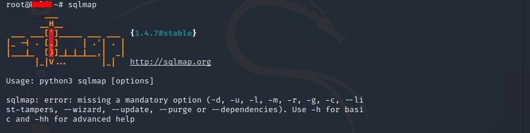

前言
立志成为信安人的我自然也不会放过这样一个好工具！
SQLmap介绍
A--什么是SQLmap

sqlmap是一款命令行界面开源的渗透测试工具(自动化SQL注入)
该工具仅支持python2版本语言,用不了python3--亲测无效
B--SQLmap的功能作用
sqlmap可以自动化侦测和实施SQL注入攻击以及渗透数据库服务器
判断可注入的参数
判断可用的SQL注入技术
识别出数据库
sqlmap配有强大的侦测引擎，适用于高级渗透测试用户，不仅可以获得不同数据库的指纹信息，还可以从数据库中提取数据，此外还能够处理潜在的文件系统以及通过数据链接执行系统命令
网站用户信息
网站管理信息
网站WEBSHELL
sqlmap目前支持MySQL、Qracie、PostgreSQL、Microsoft SQL Server、Microsoft Access、IBM DB2、SQLite、Firebird、Sybase和SAP MaxDB等数据库类型。采用五种独特的SQL注入技术，分别是：
1.基于布尔(bool)的盲注,即可以根据返回页面判断条件真假的注入
2.基于时间(time)的盲注,即不能根据页面返回内容判断任何信息,用条件语句查看时间延迟
3.基于报错(error)注入,即页面会返回错误信息,或者把注入的语句的结果直接返回在页面中
4.联合查询(union)注入,可以使用union的情况下的注入
4.堆查询注入,可以同时执行多条语句的执行时的注入
C--该怎么使用SQLmap呢？
方法一:可以在自己的电脑配置好python2的环境，然后到SQLmap官网下载
因为不推荐这样子做，所以我没有出详细教程
方法二:Kali工具包中有已经配置好的SQLmap,建议直接使用。

∶ SQLmap注入检测
三种请求类型注入探测
1--GET方式的SQL注入探测
在url链接中显示并传输数据的方式就是get方式
1 | 注入检测语句： sqlmap -u "url" |
对于get的请求,相对简单，直接指定目标
2--POST方式的SQL注入探测
与GET方式相似，但管道不同，需要抓包才可以看见
1 | 注入检测语句： sqlmap -u "url" --date "POST数据" |
3--Cookie方式的SQL注入探测
1 | 注入检测语句： sqlmap -u "url" --coolie "cookie数据" |